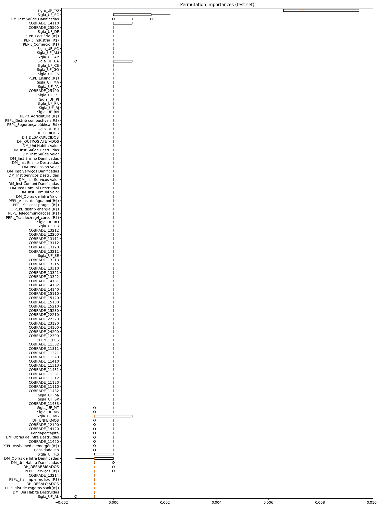

Variáveis desagregadas (2010 a 2017)#
Bibliotecas e base de dados#
Show code cell source
# Importar bibliotecas
import pandas as pd
from sklearn.model_selection import GridSearchCV
import xgboost as xgb
from sklearn.pipeline import Pipeline
from imblearn.over_sampling import SMOTE
from sklearn.model_selection import train_test_split
from sklearn import metrics
from skopt import BayesSearchCV
from sklearn import metrics
from sklearn.preprocessing import RobustScaler
from sklearn.metrics import ConfusionMatrixDisplay
from sklearn.inspection import permutation_importance
import matplotlib.pyplot as plt
#Estilizar conteúdo
import warnings
warnings.simplefilter(action='ignore', category=FutureWarning)
pd.set_option('display.max_rows', None)
pd.set_option('display.max_columns', None)
pd.set_option('display.float_format', '{:.2f}'.format)
def estilo_tabelas(df, max_altura='300px', casas_decimais=3):
return (
df.style.set_table_styles(
[
{'selector': 'thead th', 'props': [('font-size', '12px'), ('text-align', 'center'), ('border-bottom', '2px solid #007BFF')]},
{'selector': 'td', 'props': [('font-size', '10px'), ('text-align', 'center'), ('max-height', '40px'), ('white-space', 'nowrap'), ('text-overflow', 'ellipsis'), ('overflow', 'hidden'), ('max-width', '100px')]},
{'selector': 'tr:nth-child(odd)', 'props': [('background-color', '#ffffff')]},
{'selector': 'table', 'props': [('width', '90%'), ('margin-left', 'auto'), ('margin-right', 'auto'), ('border-collapse', 'collapse')]},
{'selector': 'td, th', 'props': [('border', '1px solid #666')]}, # Bordas cinza escuro
]
).set_properties(
**{'border-color': 'darkgray', 'border-style': 'solid', 'border-width': '1px'}
).set_table_attributes(
f'style="height:auto; overflow:auto; max-height:{max_altura}; display:block;"'
).format(
precision=casas_decimais
)
)
# Importar a base de dados
df_eventos_2010_2017_modelo2 = pd.read_csv(
"https://raw.githubusercontent.com/brunagmoura/PrevisorReconhecimento/refs/heads/main/df_eventos_2010_2017_modelo2.csv",
sep=';',
decimal=',',
)
estilo_tabelas(df_eventos_2010_2017_modelo2.head(5))
| Status | DH_MORTOS | DH_FERIDOS | DH_ENFERMOS | DH_DESABRIGADOS | DH_DESALOJADOS | DH_DESAPARECIDOS | DH_OUTROS AFETADOS | DM_Uni Habita Danificadas | DM_Uni Habita Destruidas | DM_Uni Habita Valor | DM_Inst Saúde Danificadas | DM_Inst Saúde Destruidas | DM_Inst Saúde Valor | DM_Inst Ensino Danificadas | DM_Inst Ensino Destruidas | DM_Inst Ensino Valor | DM_Inst Serviços Danificadas | DM_Inst Serviços Destruidas | DM_Inst Serviços Valor | DM_Inst Comuni Danificadas | DM_Inst Comuni Destruidas | DM_Inst Comuni Valor | DM_Obras de Infra Danificadas | DM_Obras de Infra Destruidas | DM_Obras de Infra Valor | PEPL_Assis_méd e emergên(R$) | PEPL_Abast de água pot(R$) | PEPL_sist de esgotos sanit(R$) | PEPL_Sis limp e rec lixo (R$) | PEPL_Sis cont pragas (R$) | PEPL_distrib energia (R$) | PEPL_Telecomunicações (R$) | PEPL_Tran loc/reg/l_curso (R$) | PEPL_Distrib combustíveis(R$) | PEPL_Segurança pública (R$) | PEPL_Ensino (R$) | PEPR_Agricultura (R$) | PEPR_Pecuária (R$) | PEPR_Indústria (R$) | PEPR_Comércio (R$) | PEPR_Serviços (R$) | DensidadePop | Rendapercapita | Sigla_UF_AC | Sigla_UF_AL | Sigla_UF_AM | Sigla_UF_AP | Sigla_UF_BA | Sigla_UF_CE | Sigla_UF_DF | Sigla_UF_ES | Sigla_UF_GO | Sigla_UF_MA | Sigla_UF_MG | Sigla_UF_MS | Sigla_UF_MT | Sigla_UF_PA | Sigla_UF_PB | Sigla_UF_PE | Sigla_UF_PI | Sigla_UF_PR | Sigla_UF_RJ | Sigla_UF_RN | Sigla_UF_RO | Sigla_UF_RR | Sigla_UF_RS | Sigla_UF_SC | Sigla_UF_SE | Sigla_UF_SP | Sigla_UF_TO | Sigla_UF_pa | COBRADE_11110 | COBRADE_11120 | COBRADE_11311 | COBRADE_11312 | COBRADE_11313 | COBRADE_11321 | COBRADE_11331 | COBRADE_11332 | COBRADE_11340 | COBRADE_11410 | COBRADE_11420 | COBRADE_11431 | COBRADE_11432 | COBRADE_11433 | COBRADE_12100 | COBRADE_12200 | COBRADE_12300 | COBRADE_13111 | COBRADE_13112 | COBRADE_13120 | COBRADE_13211 | COBRADE_13212 | COBRADE_13213 | COBRADE_13214 | COBRADE_13215 | COBRADE_13310 | COBRADE_13321 | COBRADE_13322 | COBRADE_14110 | COBRADE_14120 | COBRADE_14131 | COBRADE_14132 | COBRADE_14140 | COBRADE_15110 | COBRADE_15120 | COBRADE_15130 | COBRADE_15210 | COBRADE_15230 | COBRADE_22210 | COBRADE_22220 | COBRADE_23120 | COBRADE_24100 | COBRADE_24200 | COBRADE_25100 | COBRADE_25500 | |
|---|---|---|---|---|---|---|---|---|---|---|---|---|---|---|---|---|---|---|---|---|---|---|---|---|---|---|---|---|---|---|---|---|---|---|---|---|---|---|---|---|---|---|---|---|---|---|---|---|---|---|---|---|---|---|---|---|---|---|---|---|---|---|---|---|---|---|---|---|---|---|---|---|---|---|---|---|---|---|---|---|---|---|---|---|---|---|---|---|---|---|---|---|---|---|---|---|---|---|---|---|---|---|---|---|---|---|---|---|---|---|---|---|---|---|---|---|---|
| 0 | 1 | 0 | 0 | 0 | 0 | 0 | 0 | 4000 | 0 | 0 | 0.000 | 0.000 | 0 | 0.000 | 0.000 | 0 | 0.000 | 0 | 0 | 0.000 | 0 | 0 | 0.000 | 8.000 | 2.000 | 166542.286 | 0.000 | 0.000 | 0.000 | 0.000 | 0.000 | 0.000 | 0.000 | 6078793.423 | 0.000 | 0.000 | 41635.571 | 5204446.424 | 0.000 | 0.000 | 0.000 | 2081778.549 | 60.642 | 17.934 | 0.000 | 0.000 | 0.000 | 0.000 | 0.000 | 0.000 | 0.000 | 0.000 | 0.000 | 0.000 | 0.000 | 0.000 | 0.000 | 0.000 | 0.000 | 0.000 | 0.000 | 1.000 | 0.000 | 0.000 | 0.000 | 0.000 | 0.000 | 0.000 | 0.000 | 0.000 | 0.000 | 0.000 | 0.000 | 0.000 | 0.000 | 0.000 | 0.000 | 0.000 | 0.000 | 0.000 | 0.000 | 0.000 | 0.000 | 0.000 | 0.000 | 0.000 | 0.000 | 1.000 | 0.000 | 0.000 | 0.000 | 0.000 | 0.000 | 0.000 | 0.000 | 0.000 | 0.000 | 0.000 | 0.000 | 0.000 | 0.000 | 0.000 | 0.000 | 0.000 | 0.000 | 0.000 | 0.000 | 0.000 | 0.000 | 0.000 | 0.000 | 0.000 | 0.000 | 0.000 | 0.000 | 0.000 | 0.000 |
| 1 | 1 | 0 | 0 | 0 | 0 | 0 | 0 | 8034 | 0 | 0 | 0.000 | 0.000 | 0 | 0.000 | 0.000 | 0 | 0.000 | 0 | 0 | 0.000 | 0 | 0 | 0.000 | 0.000 | 0.000 | 0.000 | 0.000 | 0.000 | 0.000 | 0.000 | 0.000 | 0.000 | 0.000 | 0.000 | 0.000 | 0.000 | 0.000 | 3395323.196 | 4244153.995 | 0.000 | 0.000 | 0.000 | nan | 5.605 | 0.000 | 0.000 | 0.000 | 0.000 | 1.000 | 0.000 | 0.000 | 0.000 | 0.000 | 0.000 | 0.000 | 0.000 | 0.000 | 0.000 | 0.000 | 0.000 | 0.000 | 0.000 | 0.000 | 0.000 | 0.000 | 0.000 | 0.000 | 0.000 | 0.000 | 0.000 | 0.000 | 0.000 | 0.000 | 0.000 | 0.000 | 0.000 | 0.000 | 0.000 | 0.000 | 0.000 | 0.000 | 0.000 | 0.000 | 0.000 | 0.000 | 0.000 | 0.000 | 0.000 | 0.000 | 0.000 | 0.000 | 0.000 | 0.000 | 0.000 | 0.000 | 0.000 | 0.000 | 0.000 | 0.000 | 0.000 | 1.000 | 0.000 | 0.000 | 0.000 | 0.000 | 0.000 | 0.000 | 0.000 | 0.000 | 0.000 | 0.000 | 0.000 | 0.000 | 0.000 | 0.000 | 0.000 | 0.000 |
| 2 | 1 | 0 | 0 | 0 | 0 | 0 | 0 | 2732 | 0 | 0 | 0.000 | 0.000 | 0 | 0.000 | 0.000 | 0 | 0.000 | 0 | 0 | 0.000 | 0 | 0 | 0.000 | 0.000 | 0.000 | 0.000 | 0.000 | 0.000 | 0.000 | 0.000 | 0.000 | 0.000 | 0.000 | 0.000 | 0.000 | 0.000 | 0.000 | 0.000 | 0.000 | 0.000 | 26406.490 | 0.000 | 2.079 | 13.655 | 0.000 | 0.000 | 0.000 | 0.000 | 0.000 | 0.000 | 0.000 | 0.000 | 0.000 | 0.000 | 1.000 | 0.000 | 0.000 | 0.000 | 0.000 | 0.000 | 0.000 | 0.000 | 0.000 | 0.000 | 0.000 | 0.000 | 0.000 | 0.000 | 0.000 | 0.000 | 0.000 | 0.000 | 0.000 | 0.000 | 0.000 | 0.000 | 0.000 | 0.000 | 0.000 | 0.000 | 0.000 | 0.000 | 0.000 | 0.000 | 0.000 | 0.000 | 0.000 | 0.000 | 0.000 | 0.000 | 0.000 | 0.000 | 0.000 | 0.000 | 0.000 | 0.000 | 0.000 | 0.000 | 0.000 | 0.000 | 1.000 | 0.000 | 0.000 | 0.000 | 0.000 | 0.000 | 0.000 | 0.000 | 0.000 | 0.000 | 0.000 | 0.000 | 0.000 | 0.000 | 0.000 | 0.000 | 0.000 |
| 3 | 1 | 0 | 0 | 0 | 0 | 0 | 0 | 0 | 0 | 0 | 0.000 | 0.000 | 0 | 0.000 | 0.000 | 0 | 0.000 | 0 | 0 | 0.000 | 0 | 0 | 0.000 | 0.000 | 0.000 | 0.000 | 0.000 | 0.000 | 0.000 | 0.000 | 0.000 | 0.000 | 0.000 | 0.000 | 0.000 | 0.000 | 0.000 | 0.000 | 0.000 | 0.000 | 0.000 | 0.000 | 19.773 | 5.997 | 0.000 | 0.000 | 0.000 | 0.000 | 0.000 | 0.000 | 0.000 | 0.000 | 0.000 | 0.000 | 0.000 | 0.000 | 0.000 | 0.000 | 0.000 | 1.000 | 0.000 | 0.000 | 0.000 | 0.000 | 0.000 | 0.000 | 0.000 | 0.000 | 0.000 | 0.000 | 0.000 | 0.000 | 0.000 | 0.000 | 0.000 | 0.000 | 0.000 | 0.000 | 0.000 | 0.000 | 0.000 | 0.000 | 0.000 | 0.000 | 0.000 | 0.000 | 0.000 | 0.000 | 0.000 | 0.000 | 0.000 | 0.000 | 0.000 | 0.000 | 0.000 | 0.000 | 0.000 | 0.000 | 0.000 | 0.000 | 1.000 | 0.000 | 0.000 | 0.000 | 0.000 | 0.000 | 0.000 | 0.000 | 0.000 | 0.000 | 0.000 | 0.000 | 0.000 | 0.000 | 0.000 | 0.000 | 0.000 |
| 4 | 1 | 0 | 0 | 0 | 0 | 0 | 0 | 0 | 0 | 0 | 0.000 | 0.000 | 0 | 0.000 | 0.000 | 0 | 0.000 | 0 | 0 | 0.000 | 0 | 0 | 0.000 | 13.000 | 2.000 | 2048392.375 | 2617.833 | 0.000 | 0.000 | 0.000 | 0.000 | 0.000 | 0.000 | 0.000 | 0.000 | 0.000 | 0.000 | 0.000 | 0.000 | 0.000 | 0.000 | 0.000 | nan | 10.594 | 0.000 | 0.000 | 0.000 | 0.000 | 0.000 | 0.000 | 0.000 | 0.000 | 0.000 | 0.000 | 0.000 | 0.000 | 0.000 | 0.000 | 0.000 | 0.000 | 0.000 | 1.000 | 0.000 | 0.000 | 0.000 | 0.000 | 0.000 | 0.000 | 0.000 | 0.000 | 0.000 | 0.000 | 0.000 | 0.000 | 0.000 | 0.000 | 0.000 | 0.000 | 0.000 | 0.000 | 0.000 | 0.000 | 0.000 | 0.000 | 0.000 | 0.000 | 0.000 | 1.000 | 0.000 | 0.000 | 0.000 | 0.000 | 0.000 | 0.000 | 0.000 | 0.000 | 0.000 | 0.000 | 0.000 | 0.000 | 0.000 | 0.000 | 0.000 | 0.000 | 0.000 | 0.000 | 0.000 | 0.000 | 0.000 | 0.000 | 0.000 | 0.000 | 0.000 | 0.000 | 0.000 | 0.000 | 0.000 |
Ajustes da base de dados#
Show code cell source
# Remover linhas com dados ausentes
df_eventos_2010_2017_modelo2 = df_eventos_2010_2017_modelo2.dropna()
estilo_tabelas(df_eventos_2010_2017_modelo2.head(5))
# Remover linhas com todos os dados informados = 0.
colunas_informados = [
'DH_MORTOS', 'DH_FERIDOS', 'DH_ENFERMOS', 'DH_DESABRIGADOS', 'DH_DESALOJADOS',
'DH_DESAPARECIDOS', 'DH_OUTROS AFETADOS',
'DM_Uni Habita Danificadas', 'DM_Uni Habita Destruidas', 'DM_Uni Habita Valor',
'DM_Inst Saúde Danificadas', 'DM_Inst Saúde Destruidas', 'DM_Inst Saúde Valor',
'DM_Inst Ensino Danificadas', 'DM_Inst Ensino Destruidas', 'DM_Inst Ensino Valor',
'DM_Inst Serviços Danificadas', 'DM_Inst Serviços Destruidas', 'DM_Inst Serviços Valor',
'DM_Inst Comuni Danificadas', 'DM_Inst Comuni Destruidas', 'DM_Inst Comuni Valor',
'DM_Obras de Infra Danificadas', 'DM_Obras de Infra Destruidas', 'DM_Obras de Infra Valor',
'PEPL_Assis_méd e emergên(R$)', 'PEPL_Abast de água pot(R$)',
'PEPL_sist de esgotos sanit(R$)', 'PEPL_Sis limp e rec lixo (R$)', 'PEPL_Sis cont pragas (R$)',
'PEPL_distrib energia (R$)', 'PEPL_Telecomunicações (R$)', 'PEPL_Tran loc/reg/l_curso (R$)',
'PEPL_Distrib combustíveis(R$)', 'PEPL_Segurança pública (R$)', 'PEPL_Ensino (R$)',
'PEPR_Agricultura (R$)', 'PEPR_Pecuária (R$)', 'PEPR_Indústria (R$)', 'PEPR_Comércio (R$)',
'PEPR_Serviços (R$)'
]
df_eventos_2010_2017_modelo2 = df_eventos_2010_2017_modelo2[
~(df_eventos_2010_2017_modelo2[colunas_informados] == 0).all(axis=1)
]
Show code cell source
# Balanceamento da variável target
status_counts = df_eventos_2010_2017_modelo2['Status'].value_counts()
print("\nBalanceamento da variável 'Status':")
display(status_counts)
Balanceamento da variável 'Status':
Status
1 6117
0 721
Name: count, dtype: int64
Modelo sem balanceamento#
Treino e teste#
Show code cell source
X_2010_2017_modelo2 = df_eventos_2010_2017_modelo2.drop('Status', axis=1)
y_2010_2017_modelo2 = df_eventos_2010_2017_modelo2['Status']
X_train_2010_2017_modelo2, X_test_2010_2017_modelo2, y_train_2010_2017_modelo2, y_test_2010_2017_modelo2 = train_test_split(X_2010_2017_modelo2, y_2010_2017_modelo2, test_size=0.2, random_state=1, stratify=y_2010_2017_modelo2)
Treinamento sem balanceamento#
Inicialmente, o modelo foi treinado sem balanceamento e utilizando-se a busca de hiperparâmetros bayesiana com o objetivo de testar os hiperparâmetros. O teste foi feito a partir dos hiperparâmetros sugeridos por Thakur (2020).
Show code cell source
# Definir hiperparâmetros para a busca bayesiana
param_grid_bayes = {
'xgb__eta': [0.01, 0.015, 0.025, 0.05, 0.1], # Taxa de aprendizado
'xgb__gamma': [0.05, 0.1, 0.3, 0.5, 0.7, 0.9, 1.0], # Redução mínima da perda
'xgb__max_depth': [3, 5, 7, 9, 12, 15, 17, 25], # Profundidade da árvore
'xgb__min_child_weight': [1, 3, 5, 7], # Peso mínimo para divisão do nó
'xgb__subsample': [0.6, 0.7, 0.8, 0.9, 1.0], # Subamostragem para treinamento
'xgb__colsample_bytree': [0.6, 0.7, 0.8, 0.9, 1.0], # Subamostragem de colunas
'xgb__lambda': [0.01, 0.1, 1.0], # Regularização L2
'xgb__alpha': [0, 0.1, 0.5, 1.0] # Regularização L1
}
# Criar pipeline com RobustScaler e XGBoost Classifier
pipeline_xgb = Pipeline([
('scaler', RobustScaler()), # Alterado para RobustScaler
('xgb', xgb.XGBClassifier(random_state=1, eval_metric='logloss'))
])
# Realizar a busca bayesiana com validação cruzada
bayes_search_xgb = BayesSearchCV(
pipeline_xgb,
search_spaces=param_grid_bayes,
n_iter=30,
cv=3,
scoring='f1_weighted',
n_jobs=-1,
random_state=1
)
# Ajustar a busca bayesiana ao conjunto de treino
bayes_search_xgb.fit(X_train_2010_2017_modelo2, y_train_2010_2017_modelo2)
# Melhor modelo encontrado
best_xgb_model = bayes_search_xgb.best_estimator_
# Exibir os melhores hiperparâmetros
print(f"Melhores hiperparâmetros: {bayes_search_xgb.best_params_}")
# Fazer previsões com o conjunto de teste
y_pred_xgb = best_xgb_model.predict(X_test_2010_2017_modelo2)
# Relatório de classificação
classification_report_xgb = metrics.classification_report(y_test_2010_2017_modelo2, y_pred_xgb, digits=6, target_names=['Reconhecido', 'Não reconhecido'])
print('Classification report para XGBoost: \n')
print(classification_report_xgb)
Melhores hiperparâmetros: OrderedDict([('xgb__alpha', 0), ('xgb__colsample_bytree', 0.8), ('xgb__eta', 0.1), ('xgb__gamma', 1.0), ('xgb__lambda', 1.0), ('xgb__max_depth', 25), ('xgb__min_child_weight', 1), ('xgb__subsample', 0.7)])
Classification report para XGBoost:
precision recall f1-score support
Reconhecido 0.468085 0.152778 0.230366 144
Não reconhecido 0.907646 0.979575 0.942240 1224
accuracy 0.892544 1368
macro avg 0.687865 0.566176 0.586303 1368
weighted avg 0.861376 0.892544 0.867306 1368
Show code cell source
ConfusionMatrixDisplay.from_estimator(best_xgb_model, X_test_2010_2017_modelo2, y_test_2010_2017_modelo2, values_format='d', cmap='Blues', display_labels=['Reconhecido', 'Não reconhecido'])
<sklearn.metrics._plot.confusion_matrix.ConfusionMatrixDisplay at 0x1060c7b90>
Modelo com balanceamento SMOTE#
Treinamento do modelo com balanceamento SMOTE e utilizando-se a busca de hiperparâmetros bayesiana com o objetivo de testar os hiperparâmetros. O teste foi feito a partir dos hiperparâmetros sugeridos por Thakur (2020).
Treino e teste#
Show code cell source
X_smote = df_eventos_2010_2017_modelo2.drop('Status', axis=1)
y_smote = df_eventos_2010_2017_modelo2['Status']
X_train_smote, X_test_smote, y_train_smote, y_test_smote = train_test_split(X_smote, y_smote, test_size=0.2, random_state=1, stratify=y_smote)
Treinamento com balanceamento SMOTE#
Show code cell source
# Aplicar SMOTE apenas no conjunto de treino
smote = SMOTE(random_state=1)
X_train_smote, y_train_smote = smote.fit_resample(X_train_smote, y_train_smote)
# Definir hiperparâmetros para a busca bayesiana
param_grid_bayes = {
'xgb__eta': [0.01, 0.015, 0.025, 0.05, 0.1],
'xgb__gamma': [0.05, 0.1, 0.3, 0.5, 0.7, 0.9, 1.0],
'xgb__max_depth': [3, 5, 7, 9, 12, 15, 17, 25],
'xgb__min_child_weight': [1, 3, 5, 7],
'xgb__subsample': [0.6, 0.7, 0.8, 0.9, 1.0],
'xgb__colsample_bytree': [0.6, 0.7, 0.8, 0.9, 1.0],
'xgb__lambda': [0.01, 0.1, 1.0],
'xgb__alpha': [0, 0.1, 0.5, 1.0]
}
# Criar pipeline com RobustScaler e XGBoost Classifier
pipeline_xgb_smote = Pipeline([
('scaler', RobustScaler()), # Usando RobustScaler
('xgb', xgb.XGBClassifier(random_state=1, eval_metric='logloss'))
])
# Realizar a busca bayesiana com validação cruzada no conjunto balanceado pelo SMOTE
bayes_search_xgb_smote = BayesSearchCV(
pipeline_xgb_smote,
search_spaces=param_grid_bayes,
n_iter=30,
cv=3,
scoring='f1_weighted',
n_jobs=-1,
random_state=1
)
# Ajustar o modelo ao conjunto de treino balanceado
bayes_search_xgb_smote.fit(X_train_smote, y_train_smote)
# Melhor modelo encontrado
best_xgb_model_smote = bayes_search_xgb_smote.best_estimator_
# Exibir os melhores hiperparâmetros
print(f"Melhores hiperparâmetros com balanceamento smote: {bayes_search_xgb_smote.best_params_}")
# Fazer previsões com o conjunto de teste original
y_pred_xgb_smote = best_xgb_model_smote.predict(X_test_smote)
# Relatório de classificação
classification_report_xgb_smote = metrics.classification_report(
y_test_smote, y_pred_xgb_smote, digits=6, target_names=['Reconhecido', 'Não reconhecido']
)
print('Classification report para XGBoost com SMOTE: \n')
print(classification_report_xgb_smote)
Melhores hiperparâmetros com balanceamento smote: OrderedDict([('xgb__alpha', 0.1), ('xgb__colsample_bytree', 0.6), ('xgb__eta', 0.025), ('xgb__gamma', 0.9), ('xgb__lambda', 0.1), ('xgb__max_depth', 25), ('xgb__min_child_weight', 1), ('xgb__subsample', 1.0)])
Classification report para XGBoost com SMOTE:
precision recall f1-score support
Reconhecido 0.526316 0.208333 0.298507 144
Não reconhecido 0.913043 0.977941 0.944379 1224
accuracy 0.896930 1368
macro avg 0.719680 0.593137 0.621443 1368
weighted avg 0.872335 0.896930 0.876392 1368
Show code cell source
ConfusionMatrixDisplay.from_estimator(bayes_search_xgb_smote, X_test_smote, y_test_smote,
values_format='d', cmap='Blues', display_labels=['Reconhecido', 'Não reconhecido'])
<sklearn.metrics._plot.confusion_matrix.ConfusionMatrixDisplay at 0x113ef6190>
Avaliação das Variáveis de Importância#
Avaliação das variáveis de importância de acordo com o modelo com Smote, que apresentou o maior f1-score.
Feature importance#
# Ajustar o melhor modelo encontrado (depois da busca bayesiana)
best_xgb_model_smote.named_steps['xgb'].fit(X_train_smote, y_train_smote)
# Obter o booster (árvores) do modelo treinado
booster = best_xgb_model_smote.named_steps['xgb'].get_booster()
# Obter a importância das features com base no ganho
importance_dict = booster.get_score(importance_type='gain')
# Transformar em DataFrame para organizar como tabela
importance_df = pd.DataFrame({
'Feature': list(importance_dict.keys()),
'Importance': list(importance_dict.values())
})
# Ordenar pela importância em ordem decrescente
importance_df = importance_df.sort_values(by='Importance', ascending=False)
estilo_tabelas(importance_df)
| Feature | Importance | |
|---|---|---|
| 60 | Sigla_UF_SC | 214.567 |
| 59 | Sigla_UF_RS | 54.584 |
| 63 | Sigla_UF_TO | 42.314 |
| 47 | Sigla_UF_MG | 40.963 |
| 54 | Sigla_UF_PR | 31.971 |
| 69 | COBRADE_12200 | 29.343 |
| 42 | Sigla_UF_BA | 28.960 |
| 73 | COBRADE_13214 | 27.667 |
| 79 | COBRADE_14120 | 26.307 |
| 68 | COBRADE_12100 | 23.199 |
| 78 | COBRADE_14110 | 22.146 |
| 44 | Sigla_UF_ES | 15.465 |
| 76 | COBRADE_13321 | 15.447 |
| 66 | COBRADE_11410 | 14.044 |
| 61 | Sigla_UF_SE | 13.764 |
| 51 | Sigla_UF_PB | 12.104 |
| 39 | Sigla_UF_AL | 11.029 |
| 52 | Sigla_UF_PE | 10.886 |
| 70 | COBRADE_12300 | 10.337 |
| 80 | COBRADE_14132 | 10.269 |
| 65 | COBRADE_11331 | 9.898 |
| 9 | DM_Inst Saúde Danificadas | 9.000 |
| 55 | Sigla_UF_RJ | 8.790 |
| 32 | PEPR_Agricultura (R$) | 8.637 |
| 67 | COBRADE_11420 | 8.635 |
| 41 | Sigla_UF_AP | 7.863 |
| 48 | Sigla_UF_MS | 7.783 |
| 82 | COBRADE_15230 | 7.737 |
| 46 | Sigla_UF_MA | 7.290 |
| 56 | Sigla_UF_RN | 7.210 |
| 72 | COBRADE_13213 | 6.965 |
| 23 | PEPL_sist de esgotos sanit(R$) | 6.708 |
| 62 | Sigla_UF_SP | 6.708 |
| 58 | Sigla_UF_RR | 6.504 |
| 38 | Rendapercapita | 6.432 |
| 50 | Sigla_UF_PA | 6.335 |
| 81 | COBRADE_15110 | 6.335 |
| 22 | PEPL_Abast de água pot(R$) | 6.173 |
| 10 | DM_Inst Saúde Destruidas | 6.073 |
| 75 | COBRADE_13310 | 5.925 |
| 15 | DM_Inst Comuni Danificadas | 5.812 |
| 43 | Sigla_UF_CE | 5.761 |
| 77 | COBRADE_13322 | 5.719 |
| 24 | PEPL_Sis limp e rec lixo (R$) | 5.692 |
| 35 | PEPR_Comércio (R$) | 5.616 |
| 74 | COBRADE_13215 | 5.609 |
| 45 | Sigla_UF_GO | 5.586 |
| 64 | COBRADE_11321 | 5.525 |
| 21 | PEPL_Assis_méd e emergên(R$) | 5.510 |
| 17 | DM_Inst Comuni Valor | 5.315 |
| 30 | PEPL_Segurança pública (R$) | 5.066 |
| 20 | DM_Obras de Infra Valor | 4.991 |
| 26 | PEPL_distrib energia (R$) | 4.976 |
| 29 | PEPL_Distrib combustíveis(R$) | 4.949 |
| 49 | Sigla_UF_MT | 4.864 |
| 3 | DH_DESABRIGADOS | 4.795 |
| 4 | DH_DESALOJADOS | 4.769 |
| 5 | DH_OUTROS AFETADOS | 4.678 |
| 11 | DM_Inst Saúde Valor | 4.662 |
| 28 | PEPL_Tran loc/reg/l_curso (R$) | 4.599 |
| 25 | PEPL_Sis cont pragas (R$) | 4.455 |
| 0 | DH_MORTOS | 4.451 |
| 40 | Sigla_UF_AM | 4.414 |
| 71 | COBRADE_13112 | 4.232 |
| 16 | DM_Inst Comuni Destruidas | 4.208 |
| 36 | PEPR_Serviços (R$) | 4.184 |
| 8 | DM_Uni Habita Valor | 4.086 |
| 19 | DM_Obras de Infra Destruidas | 4.048 |
| 1 | DH_FERIDOS | 4.048 |
| 13 | DM_Inst Ensino Destruidas | 4.039 |
| 33 | PEPR_Pecuária (R$) | 4.030 |
| 57 | Sigla_UF_RO | 4.018 |
| 2 | DH_ENFERMOS | 3.972 |
| 7 | DM_Uni Habita Destruidas | 3.940 |
| 14 | DM_Inst Ensino Valor | 3.847 |
| 27 | PEPL_Telecomunicações (R$) | 3.786 |
| 6 | DM_Uni Habita Danificadas | 3.727 |
| 34 | PEPR_Indústria (R$) | 3.686 |
| 37 | DensidadePop | 3.564 |
| 12 | DM_Inst Ensino Danificadas | 3.451 |
| 18 | DM_Obras de Infra Danificadas | 3.384 |
| 53 | Sigla_UF_PI | 3.144 |
| 31 | PEPL_Ensino (R$) | 2.930 |
Permutation importance#
Show code cell source
# Calcular a permutação de importância no conjunto de teste
result = permutation_importance(best_xgb_model_smote, X_test_smote, y_test_smote, n_repeats=5, random_state=1, n_jobs=-1)
# Ordenar os resultados pela importância média
sorted_idx = result.importances_mean.argsort()
# Gráfico boxplot para mostrar a importância das variáveis
fig, ax = plt.subplots()
ax.boxplot(result.importances[sorted_idx].T, vert=False, tick_labels=X_test_smote.columns[sorted_idx])
ax.set_title("Permutation Importances (test set)")
fig.set_size_inches(15, 20)
fig.tight_layout()
plt.show()

Modelos com seleção de variáveis#
Importância média > 0#
# Filtrar as variáveis com importância média > 0
positive_idx = result.importances_mean > 0
# Selecionar apenas as colunas das features com importância positiva
selected_features = X_test_smote.columns[positive_idx]
# Criar novos datasets apenas com essas features
X_train_selected = X_train_smote[selected_features]
X_test_selected = X_test_smote[selected_features]
# Exibir as features selecionadas
print("Features selecionadas:", selected_features.tolist())
Features selecionadas: ['DM_Inst Saúde Danificadas', 'Sigla_UF_SC', 'Sigla_UF_TO', 'COBRADE_14110']
# Aplicar SMOTE apenas no conjunto de treino com as variáveis selecionadas.
smote = SMOTE(random_state=1)
X_train_selected, y_train_smote = smote.fit_resample(X_train_selected, y_train_smote)
# Definir hiperparâmetros para a busca bayesiana
param_grid_bayes = {
'xgb__eta': [0.01, 0.015, 0.025, 0.05, 0.1],
'xgb__gamma': [0.05, 0.1, 0.3, 0.5, 0.7, 0.9, 1.0],
'xgb__max_depth': [3, 5, 7, 9, 12, 15, 17, 25],
'xgb__min_child_weight': [1, 3, 5, 7],
'xgb__subsample': [0.6, 0.7, 0.8, 0.9, 1.0],
'xgb__colsample_bytree': [0.6, 0.7, 0.8, 0.9, 1.0],
'xgb__lambda': [0.01, 0.1, 1.0],
'xgb__alpha': [0, 0.1, 0.5, 1.0]
}
# Criar pipeline com RobustScaler e XGBoost Classifier
pipeline_xgb_smote = Pipeline([
('scaler', RobustScaler()), # Usando RobustScaler
('xgb', xgb.XGBClassifier(random_state=1, eval_metric='logloss'))
])
# Realizar a busca bayesiana com validação cruzada no conjunto balanceado pelo SMOTE
bayes_search_xgb_smote = BayesSearchCV(
pipeline_xgb_smote,
search_spaces=param_grid_bayes,
n_iter=30,
cv=3,
scoring='f1_weighted',
n_jobs=-1,
random_state=1
)
# Ajustar o modelo ao conjunto de treino balanceado
bayes_search_xgb_smote.fit(X_train_selected, y_train_smote)
# Melhor modelo encontrado
best_xgb_model_smote = bayes_search_xgb_smote.best_estimator_
# Exibir os melhores hiperparâmetros
print(f"Melhores hiperparâmetros com balanceamento smote: {bayes_search_xgb_smote.best_params_}")
# Fazer previsões com o conjunto de teste original
y_pred_xgb_smote = best_xgb_model_smote.predict(X_test_selected)
# Relatório de classificação
classification_report_xgb_smote = metrics.classification_report(
y_test_smote, y_pred_xgb_smote, digits=6, target_names=['Reconhecido', 'Não reconhecido']
)
print('Classification report para XGBoost com SMOTE e considerando apenas variáveis com importância média positiva: \n')
print(classification_report_xgb_smote)
Melhores hiperparâmetros com balanceamento smote: OrderedDict([('xgb__alpha', 0.5), ('xgb__colsample_bytree', 0.7), ('xgb__eta', 0.01), ('xgb__gamma', 0.3), ('xgb__lambda', 0.1), ('xgb__max_depth', 25), ('xgb__min_child_weight', 1), ('xgb__subsample', 1.0)])
Classification report para XGBoost com SMOTE e considerando apenas variáveis com importância média positiva:
precision recall f1-score support
Reconhecido 0.777778 0.048611 0.091503 144
Não reconhecido 0.899191 0.998366 0.946187 1224
accuracy 0.898392 1368
macro avg 0.838484 0.523489 0.518845 1368
weighted avg 0.886410 0.898392 0.856220 1368
ConfusionMatrixDisplay.from_estimator(bayes_search_xgb_smote, X_test_selected, y_test_smote,
values_format='d', cmap='Blues', display_labels=['Reconhecido', 'Não reconhecido'])
<sklearn.metrics._plot.confusion_matrix.ConfusionMatrixDisplay at 0x11442f210>
Importância média > -0.01#
# Ajustando o threshold para manter variáveis com importância > -0.01
positive_idx_adjusted = result.importances_mean > -0.01
# Selecionar apenas as colunas das features com importância ajustada
selected_features_adjusted = X_test_smote.columns[positive_idx_adjusted]
# Criar novos datasets apenas com essas features
X_train_selected_adjusted = X_train_smote[selected_features_adjusted]
X_test_selected_adjusted = X_test_smote[selected_features_adjusted]
# Aplicar SMOTE apenas no conjunto de treino com as variáveis selecionadas.
smote = SMOTE(random_state=1)
X_train_selected_adjusted, y_train_smote = smote.fit_resample(X_train_selected_adjusted, y_train_smote)
# Definir hiperparâmetros para a busca bayesiana
param_grid_bayes = {
'xgb__eta': [0.01, 0.015, 0.025, 0.05, 0.1],
'xgb__gamma': [0.05, 0.1, 0.3, 0.5, 0.7, 0.9, 1.0],
'xgb__max_depth': [3, 5, 7, 9, 12, 15, 17, 25],
'xgb__min_child_weight': [1, 3, 5, 7],
'xgb__subsample': [0.6, 0.7, 0.8, 0.9, 1.0],
'xgb__colsample_bytree': [0.6, 0.7, 0.8, 0.9, 1.0],
'xgb__lambda': [0.01, 0.1, 1.0],
'xgb__alpha': [0, 0.1, 0.5, 1.0]
}
# Criar pipeline com RobustScaler e XGBoost Classifier
pipeline_xgb_smote = Pipeline([
('scaler', RobustScaler()), # Usando RobustScaler
('xgb', xgb.XGBClassifier(random_state=1, eval_metric='logloss'))
])
# Realizar a busca bayesiana com validação cruzada no conjunto balanceado pelo SMOTE
bayes_search_xgb_smote = BayesSearchCV(
pipeline_xgb_smote,
search_spaces=param_grid_bayes,
n_iter=30,
cv=3,
scoring='f1_weighted',
n_jobs=-1,
random_state=1
)
# Ajustar o modelo ao conjunto de treino balanceado
bayes_search_xgb_smote.fit(X_train_selected_adjusted, y_train_smote)
# Melhor modelo encontrado
best_xgb_model_smote = bayes_search_xgb_smote.best_estimator_
# Exibir os melhores hiperparâmetros
print(f"Melhores hiperparâmetros com balanceamento smote: {bayes_search_xgb_smote.best_params_}")
# Fazer previsões com o conjunto de teste original
y_pred_xgb_smote = best_xgb_model_smote.predict(X_test_selected_adjusted)
# Relatório de classificação
classification_report_xgb_smote = metrics.classification_report(
y_test_smote, y_pred_xgb_smote, digits=6, target_names=['Reconhecido', 'Não reconhecido']
)
print('Classification report para XGBoost com SMOTE e considerando apenas variáveis com importância média > -0.01: \n')
print(classification_report_xgb_smote)
Melhores hiperparâmetros com balanceamento smote: OrderedDict([('xgb__alpha', 0.1), ('xgb__colsample_bytree', 0.6), ('xgb__eta', 0.025), ('xgb__gamma', 0.9), ('xgb__lambda', 0.1), ('xgb__max_depth', 25), ('xgb__min_child_weight', 1), ('xgb__subsample', 1.0)])
Classification report para XGBoost com SMOTE e considerando apenas variáveis com importância média > -0.01:
precision recall f1-score support
Reconhecido 0.526316 0.208333 0.298507 144
Não reconhecido 0.913043 0.977941 0.944379 1224
accuracy 0.896930 1368
macro avg 0.719680 0.593137 0.621443 1368
weighted avg 0.872335 0.896930 0.876392 1368
ConfusionMatrixDisplay.from_estimator(bayes_search_xgb_smote, X_test_selected_adjusted, y_test_smote,
values_format='d', cmap='Blues', display_labels=['Reconhecido', 'Não reconhecido'])
<sklearn.metrics._plot.confusion_matrix.ConfusionMatrixDisplay at 0x11444f410>
Correlação < 0.5#
# Calcular a matriz de correlação
corr_matrix = X_train_smote.corr()
# Criar um dataframe para armazenar os pares com alta correlação
high_corr_pairs = set()
# Iterar pela matriz de correlação e encontrar pares com correlação acima de 0.5
threshold = 0.5
for i in range(len(corr_matrix.columns)):
for j in range(i):
if abs(corr_matrix.iloc[i, j]) > threshold:
# Adicionar os pares de features com correlação maior que o threshold
high_corr_pairs.add((corr_matrix.columns[i], corr_matrix.columns[j]))
# Exibir os pares com alta correlação
print(f"Pares de features com correlação maior que {threshold}:")
print(high_corr_pairs)
# Remover uma feature de cada par com alta correlação
features_to_remove = {pair[1] for pair in high_corr_pairs} # Remover a segunda feature em cada par
X_train_uncorrelated = X_train_smote.drop(columns=features_to_remove)
X_test_uncorrelated = X_test_smote.drop(columns=features_to_remove)
# Exibir as features que foram removidas
print(f"Features removidas devido à alta correlação: {features_to_remove}")
Pares de features com correlação maior que 0.5:
{('PEPL_Tran loc/reg/l_curso (R$)', 'DM_Obras de Infra Valor'), ('PEPL_distrib energia (R$)', 'DM_Uni Habita Valor'), ('DM_Obras de Infra Valor', 'DM_Uni Habita Valor'), ('PEPL_distrib energia (R$)', 'DH_DESAPARECIDOS'), ('DM_Obras de Infra Valor', 'DH_MORTOS'), ('PEPL_Tran loc/reg/l_curso (R$)', 'DH_MORTOS'), ('DM_Uni Habita Valor', 'DH_DESAPARECIDOS'), ('PEPL_Tran loc/reg/l_curso (R$)', 'DH_DESAPARECIDOS'), ('DH_DESAPARECIDOS', 'DH_MORTOS'), ('PEPL_Ensino (R$)', 'PEPL_Sis limp e rec lixo (R$)'), ('COBRADE_15230', 'Rendapercapita'), ('PEPL_Tran loc/reg/l_curso (R$)', 'DM_Uni Habita Valor'), ('PEPL_distrib energia (R$)', 'DM_Obras de Infra Valor'), ('PEPL_distrib energia (R$)', 'DH_MORTOS'), ('COBRADE_14132', 'Sigla_UF_RR'), ('DM_Uni Habita Valor', 'DH_MORTOS'), ('DM_Obras de Infra Valor', 'DH_DESAPARECIDOS')}
Features removidas devido à alta correlação: {'Sigla_UF_RR', 'DH_MORTOS', 'DM_Uni Habita Valor', 'DM_Obras de Infra Valor', 'DH_DESAPARECIDOS', 'PEPL_Sis limp e rec lixo (R$)', 'Rendapercapita'}
# Aplicar o mesmo processo de SMOTE e ajuste do modelo com os dados sem alta correlação
smote = SMOTE(random_state=1)
X_train_uncorrelated_smote, y_train_smote_uncorrelated = smote.fit_resample(X_train_uncorrelated, y_train_smote)
# Ajustar o modelo com os dados sem alta correlação
best_xgb_model_uncorrelated = bayes_search_xgb_smote.fit(X_train_uncorrelated_smote, y_train_smote_uncorrelated)
# Fazer previsões
y_pred_uncorrelated = best_xgb_model_uncorrelated.predict(X_test_uncorrelated)
# Avaliar o desempenho
classification_report_uncorrelated = metrics.classification_report(
y_test_smote, y_pred_uncorrelated, digits=6, target_names=['Reconhecido', 'Não reconhecido']
)
print('Relatório de classificação após remoção de alta correlação: \n')
print(classification_report_uncorrelated)
Relatório de classificação após remoção de alta correlação:
precision recall f1-score support
Reconhecido 0.588235 0.208333 0.307692 144
Não reconhecido 0.913440 0.982843 0.946871 1224
accuracy 0.901316 1368
macro avg 0.750837 0.595588 0.627282 1368
weighted avg 0.879208 0.901316 0.879589 1368
ConfusionMatrixDisplay.from_estimator(bayes_search_xgb_smote, X_test_uncorrelated, y_test_smote,
values_format='d', cmap='Blues', display_labels=['Reconhecido', 'Não reconhecido'])
<sklearn.metrics._plot.confusion_matrix.ConfusionMatrixDisplay at 0x1144be610>